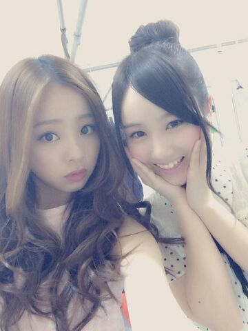

| 2014/05 01 Thu | 〜ウタゲ〜 ろってぃーで す !! |
お疲れ様です(*´∀｀) ろってぃーです..!!

いゃぁ〜 それにしてもそれにしても
自分で言うのも何だけど、６日ぶりのblogとは珍しいよ\笑 /
なんかねぇ〜 モバイルメールやりだしたら
モバイルメールに全〜部書いちゃうんだよね... てへ
許してにゃん。 笑... ぇ
え いやっ !! ちゃんとblogも...ちゃんとblogも...更新しますよっ !!!! blogの方もきっちり更新する..*
たまたまや. たまたま今回だけ６日間空いてもーたんや.
許してにゃん。 ... 笑 ンフフ。
って 雑談はここまでにしてっ、
昨日は歌番組の収録でした !!
メンバーは まひろ・まいやん・かずみ・れいか・かな・若月・まいまい・さゆりんの８人で出演しました.♪
MC: 中居正広さん / 進行:渡辺麻友さん、IVANさんの
『UTAGE!』（ウタゲ!）とゆうTBS系列の歌番組.
毎週 月曜日 23:53 - 翌0:38 に放送されております

是非 良かったら見てくださいねん..*
んーとねーー

もうプリシンパルのお稽古の日々が始まってます..*
毎日室内... だから太陽の光があびたい自分は
バスの座席は 日光の当たる一番前に座ります..*
外を歩くときは 日の当たる場所を歩きます..*
自分 植物なんで昼間は日光を浴びたいのです。
そうゆう人間。
ぢゃっ ね〜


のし..*おやすみなさい...
コメント(160)
2014/05/01 00:30